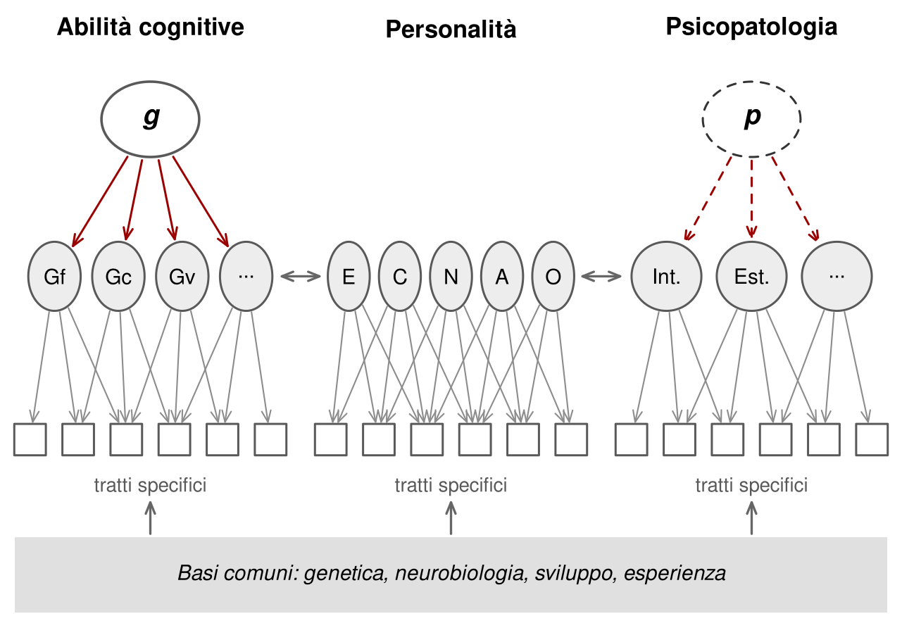

1 Perché studiare l’intelligenza
L’intelligenza è uno dei primi temi affrontati dalla psicologia scientifica e, oggi, uno dei più maturi. Ha prodotto metodi che usa l’intera disciplina, ha una rete fitta di collegamenti con la genetica, le neuroscienze e lo sviluppo, e si misura ogni giorno in ambulatori, scuole, aziende e tribunali. Eppure resta uno degli argomenti su cui anche chi lavora in psicologia sa meno di quanto crede.
Capita di sentire professionisti che chiedono come interpretare un QI calcolato con l’età mentale, un metodo abbandonato da decenni. Capita di sentire chiedere quale questionario si usi per misurare l’intelligenza, come se bastasse domandare alle persone quanto si sentono brillanti. Capita perfino di sentir dire che i test di QI siano un mito pseudoscientifico. Sono tre errori diversi, ma hanno un’origine comune: si usano strumenti di cui non si conoscono le basi.
Questo capitolo spiega perché vale la pena colmare la lacuna. Le ragioni sono pratiche, teoriche e storiche. E c’è un motivo meno ovvio: capire l’intelligenza significa capire come la psicologia studia le differenze fra le persone.
1.1 Test ovunque, spesso sotto un altro nome
Le batterie di intelligenza sono fra gli strumenti più usati della professione psicologica. Raramente però si presentano con il loro nome. Si parla di «profilo cognitivo» a un genitore, di «abilità di ragionamento» in una richiesta a una scuola, di «test di problem solving» in una selezione del personale. Spesso la scelta è sensata: evita di caricare la valutazione di significati che il punteggio non ha. Ma il cambio di etichetta non cambia lo strumento.
I contesti d’uso sono molti:
- nello sviluppo, per distinguere traiettorie tipiche e atipiche e per valutare i disturbi del neurosviluppo;
- nella scuola, per comprendere difficoltà di apprendimento e bisogni educativi;
- nella clinica, per descrivere risorse e limiti di una persona;
- nell’invecchiamento, per distinguere un declino atteso da uno patologico;
- nel lavoro, per prevedere l’adattamento a compiti complessi;
- in ambito forense, per perizie su imputabilità, capacità di partecipare al processo o danno neuropsicologico, dove validità e attendibilità di una misura vanno difese davanti a un giudice.
Molte batterie classificate come «cognitive» o «neuropsicologiche» sono, nei fatti, test di intelligenza. Le scale Wechsler ne sono l’esempio più noto.
Il problema è che la formazione si concentra spesso su somministrazione e scoring. Si impara a leggere le istruzioni e a convertire i punteggi grezzi, ma non a rispondere a domande più importanti. Che cosa sta misurando davvero lo strumento? Quanto è affidabile il punteggio ottenuto? Una discrepanza fra due indici è abbastanza grande da essere interpretata? Senza queste risposte l’interpretazione diventa automatica, a volte delegata alle piattaforme di scoring. Il risultato è un numero preciso fino al decimale e opaco nel significato.
1.2 Una palestra per tutta la psicologia
La seconda ragione riguarda la ricerca. Molti metodi oggi diffusi in ogni area della psicologia sono nati o si sono sviluppati per studiare le abilità cognitive. L’analisi fattoriale è stata proposta da Spearman per spiegare le correlazioni fra prestazioni scolastiche e sensoriali (Spearman, 1904). Dalla stessa tradizione discendono l’idea di variabile latente, i modelli di equazioni strutturali e buona parte della teoria della misura.
Chi conosce l’intelligenza capisce quindi meglio gli strumenti con cui si analizzano personalità, psicopatologia o benessere. Il percorso inverso è più faticoso: si imparano le tecniche e poi si scopre che erano state costruite per rispondere a domande precise sulle abilità mentali.
C’è anche un debito storico. La psicologia delle differenze individuali e la psicometria si sono formate attorno ai primi test cognitivi. Concetti oggi ovvi, come il punteggio standardizzato o il confronto con un gruppo normativo, sono stati inventati per misurare l’intelligenza. Sapere da dove vengono aiuta a capire perché funzionano in un certo modo e dove smettono di funzionare.
1.3 Due modi di fare psicologia
Le origini della psicologia scientifica si collocano di solito alla fine dell’Ottocento. In Germania Wilhelm Wundt apre a Lipsia, nel 1879, il primo laboratorio di psicologia sperimentale. L’interesse è rivolto ai processi generali della mente: percezione, memoria, attenzione, coscienza. Le differenze fra le persone sono un disturbo da contenere.
Negli stessi anni, in Gran Bretagna, la biologia evoluzionista di Darwin porta Francis Galton a una domanda diversa. Se la variabilità è la materia prima dell’evoluzione, allora le differenze individuali non sono rumore: sono l’oggetto da studiare. Galton raccoglie misure fisiche e sensoriali su migliaia di visitatori del suo laboratorio antropometrico. Karl Pearson formalizza la correlazione. Spearman propone l’analisi fattoriale.
Nasce così una distinzione che Cronbach, molti decenni dopo, descrisse come quella fra «due discipline» della psicologia scientifica (Cronbach, 1957):
| Processi generali | Differenze individuali | |
|---|---|---|
| Domanda | Come funziona la mente in media? | Lungo quali dimensioni le persone differiscono, e con quali conseguenze? |
| Disegno tipico | Esperimento controllato | Studio correlazionale e longitudinale |
| Campione preferito | Omogeneo | Ampio e rappresentativo |
| Variabilità fra persone | Rumore | Oggetto di studio |
| Esempi | Memoria, percezione, linguaggio | Intelligenza, personalità, psicopatologia |
Talvolta l’oggetto è lo stesso, ma la domanda cambia. Si prenda la memoria di lavoro. Chi studia i processi generali si chiede se una componente fonologica e una visuospaziale siano distinte perché un compito secondario interferisce con l’una e non con l’altra. Chi studia le differenze individuali si chiede se siano distinte perché alcune persone vanno meglio nell’una e altre nell’altra. Sono due evidenze diverse. Non è detto che diano la stessa risposta.
Oggi le due tradizioni si contaminano sempre di più. Un esperimento può stimare sia l’effetto medio di una manipolazione sia quanto quell’effetto varia da persona a persona. Un’illusione percettiva, un trattamento o una traiettoria di sviluppo hanno un andamento tipico e una dispersione attorno a esso. Studiare solo il primo significa perdere metà della storia.
1.4 La foresta delle differenze individuali
Le abilità cognitive sono una delle tre grandi aree in cui la psicologia descrive le differenze fra persone. Le altre due sono la personalità e la psicopatologia. In tutte e tre si è arrivati a modelli simili: molti tratti specifici, raggruppati in dimensioni più ampie, a loro volta correlate.
- Per le abilità cognitive il modello di riferimento è gerarchico, con abilità specifiche, ampie aree come intelligenza fluida e cristallizzata e, al vertice, un fattore generale.
- Per la personalità i cinque grandi fattori riassumono decine di tratti più circoscritti.
- Per la psicopatologia la proposta HiTOP organizza sintomi e sindromi in dimensioni internalizzanti, esternalizzanti e di altro tipo (Kotov et al., 2017); alcuni autori hanno ipotizzato anche un fattore generale, chiamato p per analogia con g (Caspi et al., 2014).
Queste aree condividono strumenti e problemi. Si misurano con test e punteggi; mostrano basi genetiche distribuite su moltissime varianti; hanno correlati neurobiologici; cambiano lungo lo sviluppo; interagiscono con l’esperienza. L’intelligenza è il punto in cui questi temi sono stati studiati più a lungo e con più dati. Per questo funziona bene come porta d’ingresso.
Nella Figura 1.1 Gf e Gc indicano l’intelligenza fluida e cristallizzata, Gv l’elaborazione visiva; le lettere della personalità indicano estroversione, coscienziosità, nevroticismo, amicalità e apertura mentale; Int. ed Est. le dimensioni internalizzante ed esternalizzante.
1.5 Perché sembra più difficile di quanto sia
L’intelligenza non è un tema più complicato della memoria o del linguaggio. Eppure sembra essere compresa con più fatica. Una parte del problema sta nei preconcetti. Tutti hanno un’idea di che cosa sia l’intelligenza, e molte di queste idee contraddicono ciò che la ricerca ha accertato. Il caso non è unico, ma qui la distanza fra intuizione comune e consensus scientifico è particolarmente ampia.
L’altra parte del problema è emotiva. Le obiezioni si somigliano: il QI serve a discriminare; non si possono ridurre le persone a numeri; siamo tutti uguali; nella vita conta l’impegno, non il QI; ognuno è un genio a modo suo. Alcune sono slogan. Altre contengono un nucleo serio, che i capitoli successivi prenderanno sul serio.
Questa resistenza non nasce dal nulla. Nella prima metà del Novecento i test di intelligenza sono stati usati per giustificare politiche eugenetiche, restrizioni all’immigrazione e sterilizzazioni forzate. Sono fatti storici, non caricature polemiche, e ne parleremo nel capitolo sulle origini dei test. Ignorarli sarebbe disonesto. Concludere che il costrutto sia per questo privo di valore sarebbe però un errore di altro tipo: confondere l’uso di uno strumento con la sua validità.
Un costrutto capace di generare polemiche così accese e abusi così gravi è, evidentemente, un costrutto potente. Lo è nel bene e nel male. Le stesse misure che sono state usate per escludere servono oggi a riconoscere una disabilità intellettiva, a individuare un bisogno educativo, a documentare un declino cognitivo, a stimare l’impatto di un’esposizione ambientale nociva. La conclusione ragionevole non è rinunciare a misurare, ma imparare a misurare bene e a interpretare con giudizio.
1.6 L’impostazione di questo libro
Il percorso che segue cerca di offrire una visione equilibrata e allineata al consenso scientifico prevalente, senza nascondere le controversie, gli errori storici e gli abusi. Quando l’evidenza è solida, lo diremo chiaramente. Quando è debole, contraddittoria o fraintesa, lo diremo con la stessa chiarezza.
Le domande sono quelle che chiunque si pone: che cos’è l’intelligenza, come si misura, se è una o molte, che cosa significa il QI, quanto contano geni e ambiente, dove si trova nel cervello, se stiamo diventando più o meno intelligenti, se si può potenziare, che cosa predice nella vita reale, come si valuta nelle condizioni del neurosviluppo. Per rispondere servirà anche un minimo di linguaggio quantitativo: correlazioni, distribuzioni, punteggi, qualità della misura. Non è un pedaggio da pagare per arrivare ai temi interessanti. È il modo in cui quei temi diventano discutibili con argomenti invece che con opinioni.